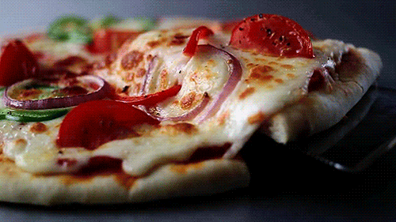

Oferta de 2 mozzarellas a 6 euros

- Esta pizza
- Esta es un pan plano horneado, habitualmente de forma redonda, elaborado con harina de
trigo, sal, agua
y levadura, cubierto con salsa de tomate y queso.1 Existen gran cantidad de variedades, principalmente
debido al formato del pan, la forma de cocinarlo y el agregado de diversos ingredientes (salami, tomate,
champiñones, cebolla, jamón, aceitunas, morrones, ananá, huevo, verduras, anchoas, palmitos, etc.) y
salsas.
Su origen es dudoso,1 pero ha sido tradicionalmente atribuido a la gastronomía de Italia y más
puntualmente
a la cocina napolitana, razón por la cual la Unión Europea le reconoció en 2010 una denominación de
origen
denominada Especialidad tradicional garantizada (ETG).234 En 2017 la UNESCO declaró al "arte de los
pizzaioli (pizzeros) napolitanos" como Patrimonio Cultural Inmaterial de la Humanidad.